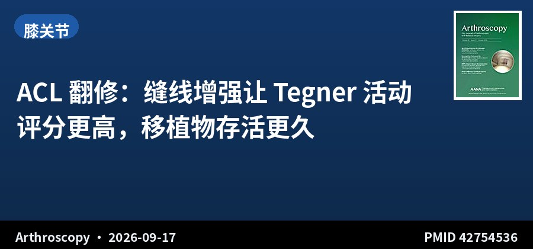
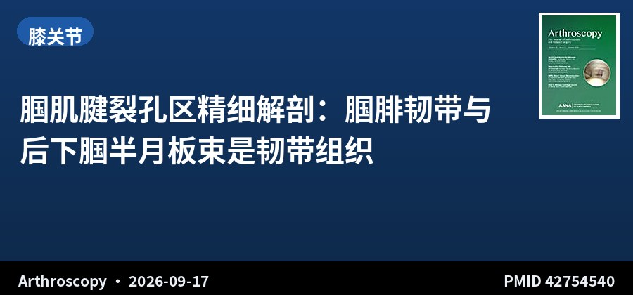
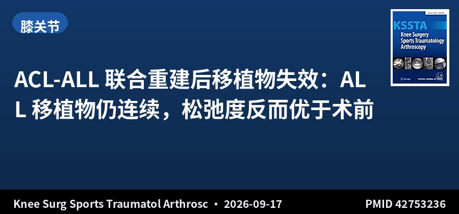
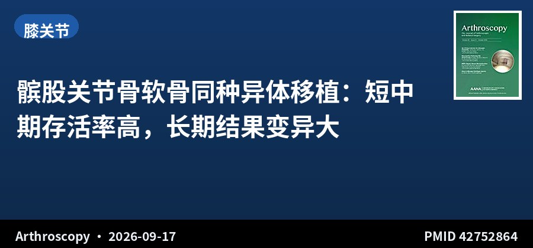
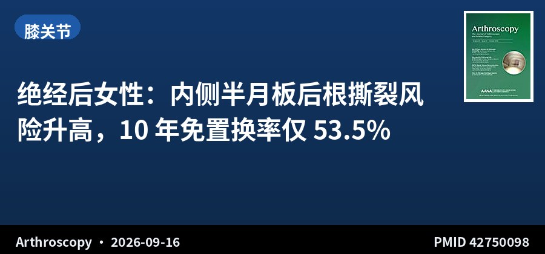
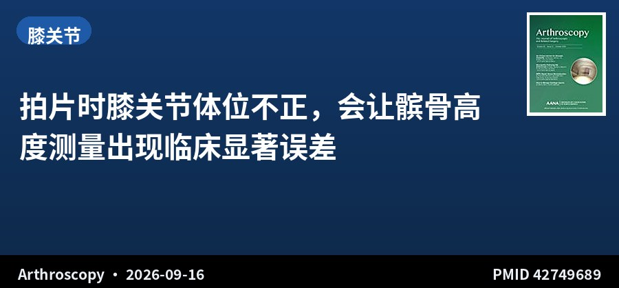
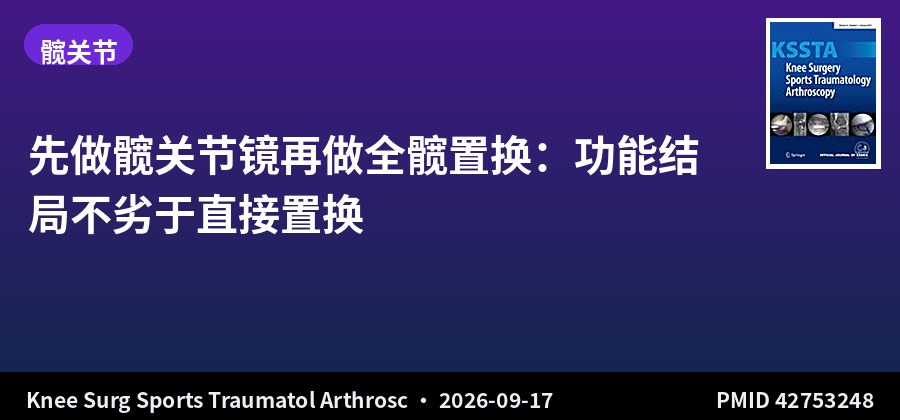
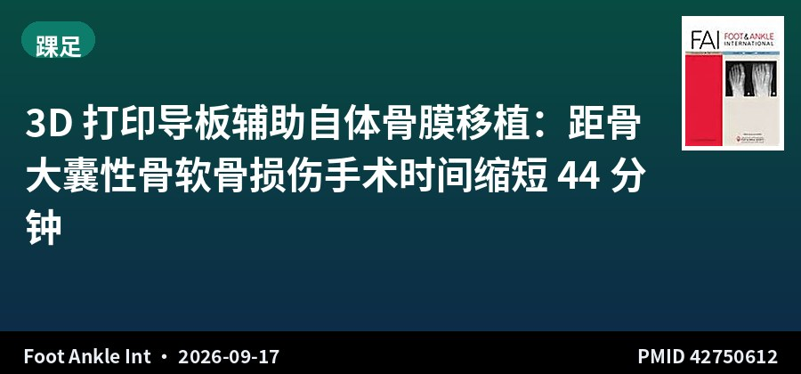
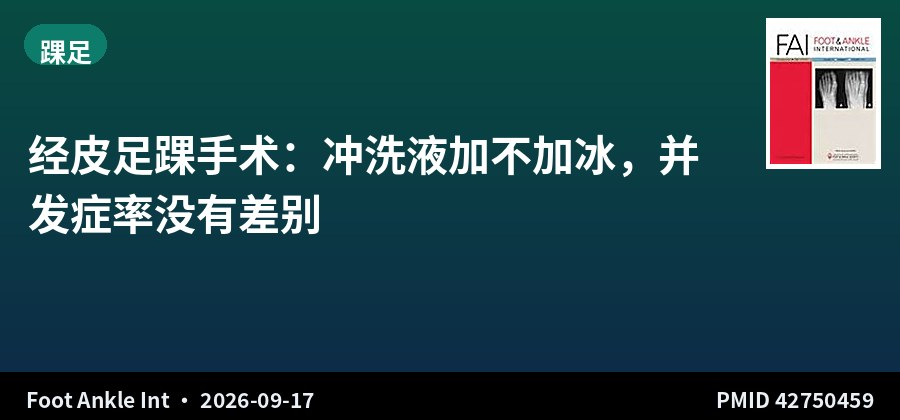
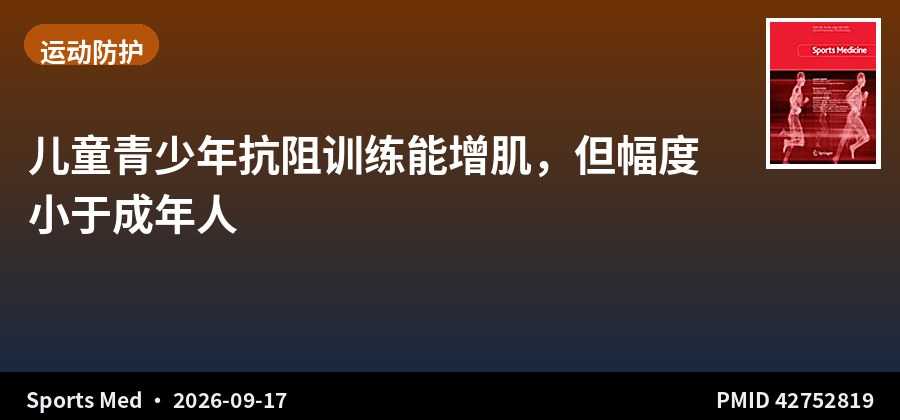

SPORTS MEDICINE & ARTHROSCOPY DIGEST
运动医学 · 关节镜文献速览
第 011 期 · 2026-09-18
9月17日单日 10 本核心期刊新收录 15 篇（剔除仅题录后精选 10 篇）
按部位分类：膝 6 · 髋 1 · 踝足 2 · 运动防护 1 ｜ 含 1 篇系统综述/Meta · 1 篇解剖学研究 · 1 篇影像学研究
编者按 EDITOR'S NOTE
本期覆盖 9 月 17 日单日新收录文献，10 本核心期刊共检出 15 篇，剔除仅题录（无实质摘要）者后精选 10 篇（单日检出量充足，未启用扩窗兜底）。
本期最值得中国同行关注的是北医三院团队的 3D 打印导板辅助自体骨膜移植治疗距骨大囊性骨软骨损伤：19 例传统 vs 13 例个体化方案，个体化组 VAS 更低、FAAM-ADL 更高、手术时间缩短 44 分钟。这条与你正在做的 3D-CT 规划研究与距骨骨软骨损伤中国指南都直接相关。另一条是 膝关节体位不正导致髌骨高度测量失真：每 5° 旋转即产生约 4mm 的髁部重叠，Caton-Deschamps 与 Blackburne-Peel 在较大外旋时出现临床显著偏差，而 Insall-Salvati 最稳健——拍片质量这个老问题终于有了量化答案。
▍膝关节 · 6 篇

回顾性队列 · III级证据 · 104例 · IPTW加权 · 随访2年+
ACL 翻修：缝线增强让 Tegner 活动评分更高，移植物存活更久
Improved Activity, Return to Sport, and Graft Survivorship With Suture-Augmented Versus Isolated Revision Anterior Cruciate Ligament Reconstruction Using All-Soft-Tissue Grafts
Arthroscopy · 2026-09-17 · 北京大学第三医院运动医学科 · PMID 42754536
一句话结论：104 例全软组织移植物 ACL 翻修，缝线增强组 47 例 vs 单纯翻修组 57 例，经逆概率治疗加权（IPTW）后基线均衡。缝线增强组术后 Tegner 评分更高（β 0.64，95%CI 0.06–1.22，P=.031），Lysholm 与 IKDC 无显著差异；次要结局中移植物失败、对侧损伤、重返运动与满意度均倾向缝线增强组。
要点：两组手术特征无差异，说明结果差异来自缝合增强本身而非术式混杂。探索性分析比较了术前与术后 MRI 上的被动胫骨前移（PATS）。研究来自单中心，2020–2023 年连续病例，最少随访 2 年。
对临床的启示：全软组织移植物在 ACL 翻修中的弱点是早期力学强度——缝线增强提供的正是这一环节的补强。值得注意的是功能评分（Lysholm、IKDC）并未显示出统计学优势，差异主要体现在活动水平（Tegner）与移植物存活上，说明获益更可能是「让患者敢于回到更高强度运动」而非单纯的主观感受改善。对翻修病例、尤其取自体移植物来源受限者，这个方案值得纳入考虑。

解剖+组织学研究 · 尸体6例
腘肌腱裂孔区精细解剖：腘腓韧带与后下腘半月板束是韧带组织
Anatomic and Histologic Analyses of the Popliteal Hiatus Area of the Lateral Meniscus Reveal the Meniscofibular Ligament and the Posteroinferior Popliteomeniscal Fascicle Are Ligamentous Tissue
Arthroscopy · 2026-09-17 · 南京中医药大学 / 上海市第一人民医院 · PMID 42754540
一句话结论：6 例新鲜冷冻尸体膝解剖显示：后上腘半月板束（PS-PMF）起自腘肌腱后侧并止于外侧半月板上面；后下腘半月板束（PI-PMF）起自腘肌腱前缘止于半月板下面，两者之间恒定有脂肪组织分隔。组织学上腘腓韧带与 PI-PMF 呈韧带特征，而前腘半月板束（A-PMF）与 PS-PMF 为血管滑膜结构。
要点：腘腓腓韧带（MFL）起自外侧半月板，向上与 A-PMF 相连，向下与腘腓韧带（PFL）汇聚；MFL 与 PI-PMF 之间在 5/6 标本存在束间间隙。研究明确 PS-PMF 与 PI-PMF 共同构成一个包绕结构。
对临床的启示：腘肌腱裂孔区是外侧半月板稳定性的关键，也是临床上容易漏诊的「隐藏损伤区」（如腘肌腱裂孔综合征）。这项研究把既往含混的结构命名与组织学属性厘清了：MFL 与 PI-PMF 是真韧带，承担力学约束；A-PMF 与 PS-PMF 更偏滑膜血管性质——这为术中判断「该修还是该松解」提供了组织学依据。对外侧半月板后外侧不稳的处理有直接参考价值。

回顾性病例系列 · IV级证据 · 15例
ACL-ALL 联合重建后移植物失效：ALL 移植物仍连续，松弛度反而优于术前
Preserved anterolateral ligament graft continuity on MRI and lower knee laxity after ACL graft failure than before index combined ACL-ALL reconstruction: A retrospective case series
Knee Surg Sports Traumatol Arthrosc · 2026-09-17 · 巴西圣保罗大学 · PMID 42753236
一句话结论：15 例 ACL-ALL 联合重建后发生 ACL 移植物失效者（失效时间平均 22 个月），MRI 显示 ALL 移植物在 15 例（100%）中连续性完好，仅 9 例（60%）有轻度信号改变。失效后 KT-1000 侧间差中位数低于术前（5 vs 7mm，P=.001），pivot-shift 分级也更低（1 vs 2，P=.001）。
要点：80%（12/15）的患者 ATT 与 pivot-shift 分级较术前改善，无一例出现高级别 pivot shift。索引手术为初次重建 12 例、翻修 3 例。ALL 移植物在 ACL 失效的情况下仍保持结构与功能。
对临床的启示：这是一组反直觉但很有价值的发现：ACL 移植物失效不等于「一切归零」——ALL 移植物依然连续，且旋转稳定性比初次手术前更好。这提示 ALL 重建带来的前外侧约束具有独立性，即便 ACL 侧失效仍在起保护作用，也解释了为什么二次翻修时旋转不稳可能没有预期那么严重。样本仅 15 例，属病例系列，结论需谨慎外推。

系统综述 · I–IV级证据 · 7项研究 · 8–40例/项
髌股关节骨软骨同种异体移植：短中期存活率高，长期结果变异大
Osteochondral Allograft Transplantation of the Patellofemoral Joint Shows High Short- to Midterm Survivorship but Variable Long-Term Outcomes: A Systematic Review
Arthroscopy · 2026-09-17 · 美国密苏里大学 · PMID 42752864
一句话结论：7 项研究（1990–2024，每项 8–40 例，年龄 12–64 岁，随访 24–238.8 个月）显示：所有研究均报告功能评分（IKDC、KOS-ADL、改良 d'Aubigné-Postel）显著改善（P<.05），失败率 0%–25%，多数以转为关节置换作为失败终点。
要点：髌股关节骨软骨同种异体移植（OCA）多为翻修手术，57.8%–100% 患者至少接受过一次既往手术。研究质量用改良 Coleman 评分评估、偏倚风险用 MINORS 标准评定。
对临床的启示：髌股关节是 OCA 公认的「重灾区」——生物力学环境差、失败率高，因此这项综述「短中期存活良好但长期变异大」的结论已经算是相对乐观。关键限制是纳入研究仅 7 项、样本极小、随访跨度极大（2 年 vs 近 20 年混在一起），且失败定义不统一（0%–25% 的差异很可能来自定义而非真实疗效）。对年轻、软骨缺损大、已多次手术的患者，OCA 可作为保关节选项，但术前沟通必须说明长期不确定性。

病例对照 · III级证据 · 1564例 · 随访10年
绝经后女性：内侧半月板后根撕裂风险升高，10 年免置换率仅 53.5%
Postmenopausal Status Is Associated With Increased Risk of Medial Meniscus Posterior Root Tears and Subsequent Arthroplasty
Arthroscopy · 2026-09-16 · 美国梅奥诊所 · PMID 42750098
一句话结论：1564 例（女 782 例）中位年龄 63 岁，244 例（15.6%）存在内侧半月板后根撕裂（MMPRT）。年龄与女性均为 MMPRT 的危险因素。合并 MMPRT 的绝经后女性 10 年免除关节置换生存率为 53.5%，男性为 78.4%（P=.02）。
要点：女性与男性按年龄、BMI 1:1 匹配。绝经相关因素中，绝经年龄、手术绝经、激素替代治疗（HRT）与骨密度均与 MMPRT 相关。MMPRT 本身、女性、BMI 与 Charlson 合并症指数是关节置换的危险因素。
对临床的启示：绝经后女性 MMPRT 的高发与更差的保膝结局，指向骨代谢与激素环境的双重作用——HRT 与骨密度进入危险因素名单尤其值得注意。临床上对围绝经期女性出现内侧关节线疼痛，应更积极地做 MRI 排查后根撕裂，而不是当作普通退变性半月板损伤处理。10 年免置换率仅 53.5% 这个数字，也是与患者讨论保膝手术时机时很有分量的依据。

影像学研究 · 40膝 · 3D-CT 重建
拍片时膝关节体位不正，会让髌骨高度测量出现临床显著误差
Knee Malposition During Radiographs Can Produce Clinically Relevant Errors in Measurements of Patellar Height
Arthroscopy · 2026-09-16 · 美国麻省总医院 / 哈佛医学院 · PMID 42749689
一句话结论：20 例单侧髌骨不稳患者的 40 膝 3D-CT 模型显示：膝关节每旋转或内收外展 5°，后髁重叠增加约 4mm（P<.001）。Insall-Salvati（IS）对体位异常最不敏感（波动 -0.023–0.012）；Caton-Deschamps 与 Blackburne-Peel 在大角度外旋时出现临床与统计学显著偏差；改良 IS 在内收与外展时均有显著偏差（10° 时 0.054）。
要点：方法学上以 20°–30° 屈膝模型投影出标准侧位片作为基准，逐步施加旋转与内外收展模拟体位不正，以 0.05 的变化量作为临床显著阈值。后髁重叠程度可作为估计体位不正程度与测量误差的替代指标。
对临床的启示：髌骨高度是决定胫骨结节移位术式与截骨量的关键参数，而这项研究说明——只看侧位片「像不像标准位」并不可靠。实用的做法是把后髁重叠程度当作质量控制指标：重叠越大，Caton-Deschamps 等指标的读数越不可信。IS 最稳健这一点也很实用，在体位欠佳的片上优先用它。影像质量的量化要求，对术前规划有直接意义。
▍髋关节 · 1 篇

对比队列 · III级证据 · 546例 · 随访52.6个月
先做髋关节镜再做全髋置换：功能结局不劣于直接置换
Comparable functional outcomes after total hip arthroplasty in patients with and without prior ipsilateral hip arthroscopy: A comparative cohort study
Knee Surg Sports Traumatol Arthrosc · 2026-09-17 · 德国海德堡 ATOS 医院 · PMID 42753248
一句话结论：546 例（髋镜后置换 89 例 vs 直接置换 457 例，平均年龄 67 岁，随访 52.6 个月）显示：两组 HOOS 各亚量表术后均显著改善，除生活质量亚量表外组间无显著差异（髋镜后组 75.7 vs 82.9，P=.009）。髋镜后置换组 3.4%（3 例）需翻修。
要点：研究限定转换间隔 >6 个月。主要结局为 HOOS，次要结局含并发症率、翻修率与 HHS、OHS、VAS。BMI 较高者在直接置换组与较差功能结局相关。
对临床的启示：对「先做髋关节镜会不会毁了后续置换」这个常见顾虑，本研究给出了明确的否定答案——功能结局基本相当，只是生活质量评分略低。真正值得关注的是转换时机：作者提示并发症与翻修率可能与转换间隔有关。对髋关节镜术后效果不佳、需要考虑置换的患者，这个结论能显著减轻双方的决策压力。
▍踝足 · 2 篇

回顾性对照 · III级证据 · 32例 · 3D打印导板
3D 打印导板辅助自体骨膜移植：距骨大囊性骨软骨损伤手术时间缩短 44 分钟
Preoperative Computer Simulation and 3D-Printed Guide Plate of Autologous Transplantation Achieved Favorable Outcomes in Patients With Large Cystic Osteochondral Lesion of the Talus
Foot Ankle Int · 2026-09-17 · 北京大学第三医院运动医学科 · PMID 42750612
一句话结论：32 例内侧大囊性距骨骨软骨损伤（面积 >100mm² 和/或深度 >8mm）行自体骨膜移植（AOPT），个体化组 13 例 vs 传统组 19 例。个体化组术后 VAS 显著更低（2.00 vs 3.00，P=.004）、FAAM-ADL 显著更高（均差 5.75，95%CI 2.60–8.91，P<.001）、手术时间缩短 0.74 小时（约 44 分钟，95%CI -0.98 至 -0.50）。
要点：方案包括在 3D 重建踝模型上模拟并优化手术、设计定制化截骨导板（cutting jigs）术中导航截骨与骨槽制作。两组病灶面积无显著差异（89.96 vs 87.85mm²，P=.821），MOCART、FAAM、VAS 与术后并发症均有记录。
对临床的启示：这项来自北医三院的研究与你正在推进的 3D-CT 规划路线高度同源——把个体化解剖建模与定制导板用于骨槽定位，直接兑现为更短的手术时间和更好的早期功能。对你正在做的距骨骨软骨损伤中国循证指南而言，这是「3D 打印/计算机辅助技术」这一技术推荐条目的直接证据；对四步法 FAI 研究，其「术前 3D 模拟 + 术中导航」的思路也可作为方法学讨论的对照范式。

前瞻性队列 · II级证据 · 442例 · 双中心
经皮足踝手术：冲洗液加不加冰，并发症率没有差别
No Difference in Short-term Postoperative Complication Rates Between Non-chilled and Chilled Saline Irrigation in Percutaneous Foot and Ankle Surgery
Foot Ankle Int · 2026-09-17 · 瑞士 / 美国多中心 · PMID 42750459
一句话结论：442 例经皮双截骨拇外翻矫形（冰盐水组 220 例 vs 常温盐水组 222 例），平均年龄 50.9 岁。骨愈合时间中位数均为 12 周（P=.11），愈合率均 100%，并发症率冰盐水组 1.36% vs 常温组 0.45%，无统计学差异。
要点：数据前瞻性收集自 2 家机构共 485 例连续患者。研究背景是经皮磨钻长时间使用产生的热量可能造成骨与软组织热损伤，从而理论上影响愈合——加冰冲洗液曾被寄予降低这一风险的期望。
对临床的启示：这是一个典型的「理论很合理、数据不支持」的临床问题。磨钻热损伤确实存在，但把冲洗液降温并未转化为更低的并发症率或更快的愈合。对手术室而言，省去冰盐水准备环节既简化流程也无损结局。研究为前瞻性设计、样本量尚可（442 例），是这类「操作细节」问题里质量较高的一次回答。
▍运动防护 · 1 篇

系统综述+Meta分析 · I级证据 · 23项研究 · 1443人
儿童青少年抗阻训练能增肌，但幅度小于成年人
Effects of Resistance Training on Muscle Hypertrophy in Children and Adolescents: A Systematic Review and Meta-Analysis
Sports Med · 2026-09-17 · 德国奥格斯堡大学等 · PMID 52819
一句话结论：23 项研究、1443 名 18 岁以下受试者显示：与被动对照相比，抗阻训练带来小幅肌肉量增加（效应量 Cohen's d 较小）；亚组分析按成熟阶段、性别与训练方案设计分别进行，以考察增肌效应是否随青春期发育而不同。
要点：仅纳入用直接影像学或间接仪器法评估肌肉肥大的随机与非随机对照研究。检索 PubMed、Scopus、Web of Science、Google Scholar；RoB 2 与 ROBINS-I 评估偏倚，PEDro 评估方法学质量，研究已在 PROSPERO 预注册（CRD420251025605）。训练方案的增肌适宜性用既有增肌指南评估。
对临床的启示：「小孩练力量会不会长肌肉」在运动医学与青少年训练领域长期存在争议。这项 meta 的答案是「会，但幅度有限」——青春期前以神经适应为主、青春期后才逐渐接近成人的肌肉肥大反应，这符合发育生物学预期。对青少年运动员的力量训练处方，重点仍应放在动作质量、负荷渐进与安全性上，而非期待显著的肌肉体积增长。
关于本栏目：每日定时检索 AJSM、Arthroscopy、Arthroscopy Techniques、KSSTA、Sports Health、OJSM、J ISAKOS、Sports Medicine、Foot & Ankle International、JSES 共 10 本运动医学核心期刊前一日新收录文献，按关节分类，AI 辅助生成中文精要。
声明：本内容由 AI 辅助整理，仅供学术交流参考，观点与数据请以原文为准，不构成诊疗建议。文献题录与摘要来源：PubMed。
— 运动医学 · 关节镜文献速览 · 第 011 期 —